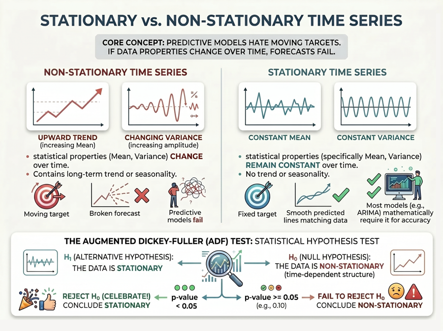
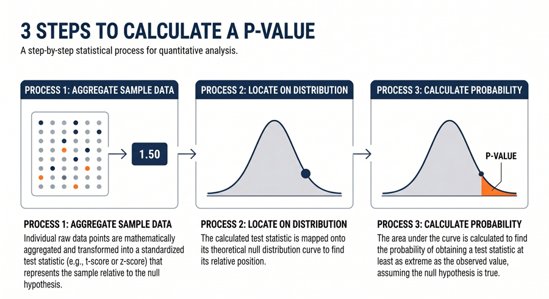
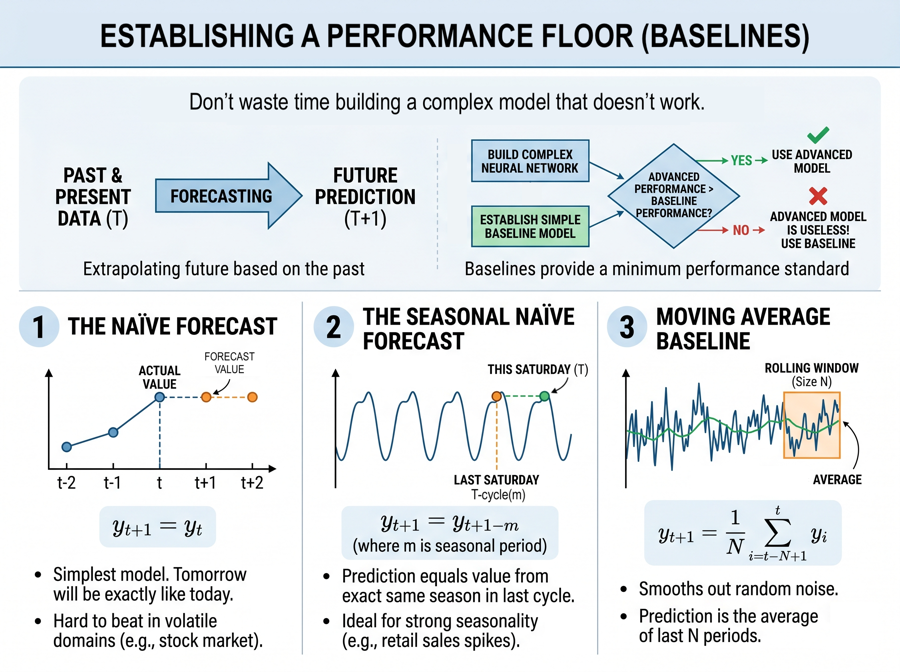

MCI1104 ADVANCED ANALYTICS
Week 1 Study Guide
1. From Data to Information (Estimated Time: 20 Mins)
Core Concept: You live in a data-rich but information-poor world. Your fundamental goal in analytics is to transform the raw noise into actionable insights.

- Data: Think of this as raw, unorganized facts—numbers or text without context (e.g., "100", "Red", "10:04 AM").
- Information: This is what happens when you process and structure data to give it meaning (e.g., "100 customers bought the Red shirt at 10:04 AM").
- The DIKW Pyramid: As an analyst, you will climb the ladder from Data → Information → Knowledge → Wisdom. Advanced analytics empowers you to discover patterns (Knowledge) and prescribe actions (Wisdom).
2. The Data Mining Process: CRISP-DM (Estimated Time: 45 Mins)
Core Concept: Real-world data mining isn't just about writing code; it requires a structured, iterative roadmap. The industry standard you will use is CRISP-DM (Cross-Industry Standard Process for Data Mining).

- Business Understanding: You must first define the problem. What is the business goal? (e.g., "We need to reduce customer churn by 10%.")
- Data Understanding: Explore the data you have. Is it complete? Are there missing values?
- Data Preparation: Prepare to spend 70-80% of your time here. You will clean, format, and engineer features from your raw data.
- Modeling: Apply your algorithms. You will often jump back and forth between this step and Data Preparation.
- Evaluation: Does your model actually solve the business problem defined in step one, or does it just look good on paper?
- Deployment: Put your model to work in the real world and monitor its performance.
3. Machine Learning vs. Statistics (Estimated Time: 25 Mins)
Core Concept: As you transition into advanced analytics, it's crucial to understand how your statistical background differs from the machine learning mindset.

- Statistics (The "Why"): Focuses heavily on inference. You use it to understand the underlying data generation process and rely on strict mathematical assumptions.
- Machine Learning (The "What"): Focuses heavily on prediction. You will train algorithms to find complex patterns without needing strict theoretical assumptions about the data.
- Learning the Lingo: Be prepared to switch vocabularies. What statisticians call "Variables" and "Parameters," you will often hear machine learning engineers call "Features" and "Weights."
4. Generalization as Search (Estimated Time: 30 Mins)
Core Concept: How will your models actually "learn"? By searching through a massive landscape of possibilities to find the best fit.

- The Hypothesis Space: Think of this as a vast space containing every possible model your algorithm could create. Your algorithm's job is to search this space for the winning model.
- Your Core Challenge: Generalization. Anyone can build a model that memorizes the past. Your true task is to build a model that generalizes well to the future (unseen data).
- The Balancing Act:
- Overfitting (High Variance): Your model memorized the training data—including the noise. It will fail in the real world.
- Underfitting (High Bias): Your model is too simple and hasn't learned enough. It fails on both training and real-world data.
No practical laboratory hours are scheduled for this introductory week. Instead, take a moment to reflect on your own experiences:
"Think of a problem or inefficiency in your daily life or workplace. How would you frame it using the first two steps (Business Understanding & Data Understanding) of the CRISP-DM framework?"
Week 2 Study Guide
1. Components of the Input for Learning (Estimated Time: 30 Mins)
Core Concept: Before you can build a model, you need to understand the anatomy of the data feeding into it. Think of a standard dataset as a highly structured grid of information.

- Instances (The "Rows"): These are the individual, independent examples in your dataset. Depending on your domain, you might call them records, examples, data points, or samples. If you are predicting house prices, one instance is a single house.
- Attributes (The "Columns"): These are the distinct properties, features, or characteristics of your instances. Using the house example, attributes would be the number of bedrooms, square footage, and neighborhood.
- The Matrix Form: In practice, you will work with this data as an N x M matrix, where N is the number of instances and M is the number of attributes.
2. Concepts in Learning (Estimated Time: 25 Mins)
Core Concept: The "concept" is the specific thing you want your algorithm to comprehend or output. It is the target of your analytical efforts.

- Classification Concept: You want the algorithm to learn how to assign instances to predefined categories. (e.g., "Is this email Spam or Not Spam?")
- Association Concept: You want the algorithm to learn rules that associate different attributes together. (e.g., "Customers who buy bread are also likely to buy butter.")
- Clustering Concept: You want the algorithm to group similar instances together when there are no predefined categories. (e.g., "Segment our customer base into three distinct purchasing behaviors.")
- Numeric Prediction Concept: You want to forecast a continuous numerical value. (e.g., "What will the temperature be tomorrow?")
3. Types of Attributes (Estimated Time: 35 Mins)
Core Concept: Not all data is created equal. Algorithms treat text, categories, and numbers very differently. You must be able to classify your variables to choose the right analytical approach.

- Categorical (Qualitative) Attributes:
- Nominal: Categories with no inherent mathematical order or ranking. (e.g., Eye Color: Blue, Brown, Green). You cannot say Brown is "greater than" Blue.
- Ordinal: Categories with a clear, logical order or rank, but the exact distance between them isn't mathematically measurable. (e.g., Customer Satisfaction: Low, Medium, High).
- Numeric (Quantitative) Attributes:
- Interval: Measurable quantities where the difference between values is meaningful, but there is no "true zero" point. (e.g., Temperature in Celsius: 0°C does not mean "no temperature").
- Ratio: Measurable quantities with a true, meaningful zero point, allowing you to compute ratios. (e.g., Weight, Age, Salary: Someone earning $100k makes twice as much as someone earning $50k).
4. Preparing the Input (Estimated Time: 30 Mins)
Core Concept: Algorithms are strictly mathematical and highly sensitive to bad data. "Garbage in, garbage out." You must prepare the raw input before any learning can happen.

- Handling Missing Data: Datasets will have blanks. You must decide whether to delete instances with missing data or "impute" them (fill them in using averages or predictions).
- Encoding Categories: Machine learning algorithms cannot read text like "Red" or "Blue." You will learn to convert these into numbers using techniques like One-Hot Encoding.
- Handling Outliers: Identifying extreme anomalies that could artificially skew your model's perspective.
- Normalization/Standardization: Scaling numeric attributes so they are on similar scales (e.g., shrinking values ranging from 1,000–100,000 to fall between 0 and 1). This ensures that attributes with naturally larger numbers don't unfairly dominate the algorithm.
It's time to get your hands dirty! In this week's lab, you will step into the shoes of a data analyst. Using Python and the Pandas library, you will:
- Load a real-world dataset: (e.g., Titanic passenger data or Housing prices).
- Explore the data: Write code to distinguish between the categorical and numerical attributes.
- Clean the data: Identify missing values and practice different imputation strategies.
- Transform the data: Convert a nominal attribute into a machine-readable format and normalize a ratio attribute.
Week 3 Study Guide
Introduction: Before you build complex models or even draw a single chart, you must become a data detective. EDA is the critical process of performing initial investigations on data to discover patterns, spot anomalies, test hypotheses, and check assumptions.
Forcing the data to reveal its structural secrets.
Your goal: Understand what the data is telling you before forcing it into an algorithm. This starts with non-visual EDA (calculating means, medians, and missing values) to establish a baseline, followed by visual data representation; which is our primary focus this week.

1. Classification of Data Representation Methods (Estimated Time: 20 Mins)
Core Concept: Once you understand your numerical baseline, you move to visual EDA. Not every chart works for every dataset. Your first job is to classify what you are trying to show. Are you trying to see the composition of a whole, compare items, show a relationship between variables, or understand the distribution of a single variable? Asking the right question dictates the right visual tool.

2. Composition (Estimated Time: 20 Mins)
Core Concept: You use composition charts when you want to show how a whole entity is divided into its constituent parts. (e.g., "What percentage of our total sales comes from each region?")

- Pie Charts: While popular, you should use these sparingly. Human eyes are notoriously bad at comparing angles and areas, making similar-sized slices hard to differentiate.
- Donut Charts: A variation of the pie chart with the center removed. By focusing the eye on the length of the arcs rather than the area or angle of slices, they can be slightly easier to read, though they share the same general limitations.
- Treemaps: Useful for displaying large volumes of hierarchical data using nested rectangles. The size and color of each rectangle allow you to compare multiple dimensions of the data at once.
- Stacked Bar Charts: A highly effective alternative to pie and donut charts. They allow you to easily compare parts of a whole, especially when you need to track how that composition changes across different categories or time periods.
3. Comparison (Estimated Time: 25 Mins)
Core Concept: You will use comparison charts to evaluate multiple items against each other, or to see how a single item changes over time. (e.g., "How did product A perform compared to product B over the last 12 months?")

- Column Charts (Vertical): Your standard tool for comparing discrete categorical data. Always ensure your y-axis starts at zero to avoid misleading visual comparisons.
- Bar Charts (Horizontal): Functionally identical to column charts but laid out horizontally. These are highly recommended when your category labels are long or when you are comparing a large number of items.
- Grouped Bar/Column Charts: Used when you need to compare multiple sub-groups side-by-side within primary categories (e.g., comparing both Product A and Product B's performance simultaneously across four different quarters).
- Line Charts: The definitive choice for comparing continuous data over a period of time (Time Series), allowing you to easily spot historical trends, volatility, and seasonality.
4. Relationships (Estimated Time: 30 Mins)
Core Concept: In predictive analytics, identifying relationships is crucial. You want to know if changing one variable affects another. (e.g., "As marketing spend increases, does customer acquisition also increase?")

- Scatter Plots: The foundational chart for visualizing the relationship between two continuous numeric variables along an x and y-axis. You will look for linear trends, clusters, or a complete lack of correlation (random scatter).
- Bubble Charts: An evolution of the scatter plot that allows you to visualize a third numeric dimension. The x and y axes dictate the position, while the area (size) of the "bubble" represents the magnitude of the third variable.
- Connected Scatter Plots: A hybrid between a scatter plot and a line chart. It plots two variables on the axes but connects the points with a line in a specific sequence (typically chronological) to trace how their relationship evolves over time.
- Correlation Heatmaps: A powerful tool to view relationships across your entire dataset at once. Using a color gradient in a grid format, it mathematically quantifies and displays how strongly every numerical variable correlates with every other variable.
5. Distributions (Estimated Time: 25 Mins)
Core Concept: Before analyzing how variables interact, you must understand each variable on its own. How is the data spread out? Where is the center? Are there extreme anomalies?

- Histograms: These group numeric data into "bins" to show the frequency of values. You will use this to determine if your data follows a normal distribution (bell curve) or if it is skewed to one side.
- Density Plots: A smoothed, continuous version of a histogram. It estimates the probability distribution of a continuous variable, making it easier to visualize the overall shape of the data without being affected by arbitrary bin sizes.
- Box-Plots (Box and Whisker): Excellent for visualizing the median, the interquartile range, and pinpointing exact statistical outliers (data points that fall far outside the normal distribution).
- Violin Plots: A hybrid between a box plot and a density plot. It provides the same statistical summary as a box plot but adds a rotated density plot on each side, allowing you to easily spot multiple peaks or clusters in the data that a standard box plot would hide.
You will now translate these visual concepts into code. Using Python's powerful visualization libraries, Matplotlib and Seaborn, you will:
- Analyze Distributions: Plot histograms to observe the skewness of numerical features in a provided dataset.
- Hunt for Outliers: Generate box-plots and statistically identify anomalous data points.
- Map Relationships: Create a correlation heatmap to identify which features have the strongest predictive relationship with your target variable, followed by scatter plots to visualize those specific pairs.
Week 4 Study Guide:
Introduction: Up until now, the datasets you have explored were likely "snapshots" in time. If you shuffled the rows of a housing price dataset, the overall patterns wouldn't change. Time Series data breaks this rule completely. In this module, you will learn how to handle data where time is the primary axis, and the chronological order of your instances is the most important feature of all.

1. The Nature of Time Series Data (Estimated Time: 30 Mins)
Core Concept: Time series data is a sequence of data points recorded at specific, usually consistent, intervals of time (e.g., daily stock prices, hourly temperature, monthly sales). Because the data is sequential, you cannot assume that one data point is independent of the one before or after it.

- The i.i.d. Assumption Fails: Standard machine learning models assume data is independent and identically distributed (i.i.d.). In time series, today's value is heavily influenced by yesterday's value (autocorrelation). Standard models will fail if you ignore this sequence.
- Decomposition (The Anatomy of a Series): To understand a time series, you must break it apart. Any time series can be decomposed into three primary components:
- Trend: The long-term macro direction of the data (e.g., a company's revenue generally increasing over 5 years).
- Seasonality: Predictable, repeating short-term cycles tied to the calendar or clock (e.g., retail sales spiking every December, or website traffic dropping every night at 3 AM).
- Residual (Noise): The random, unpredictable variations left over after extracting the trend and seasonality.
2. Stationary and Non-Stationary Time Series (Estimated Time: 45 Mins)
Core Concept: Predictive models hate moving targets. If the fundamental properties of your data change over time, a model trained on the past will fail in the future. This is why we need Stationarity.

- What is Stationarity? A time series is strictly stationary if its statistical properties, specifically its mean (average) and variance (spread), remain constant over time. It has no long-term trend and no seasonal spikes.
- Why it matters: Most time series forecasting models (like ARIMA) mathematically require the data to be stationary to make accurate predictions.
- The Augmented Dickey-Fuller (ADF) Test: You don't have to guess if data is stationary just by looking at a chart. You will use the ADF test, a statistical hypothesis test where:
- Null Hypothesis (H0): The data is non-stationary (it has a time-dependent structure).
- Alternate Hypothesis (H1): The data is stationary. (If your p-value is < 0.05, you reject the null and celebrate!).


3. Data Transformation: Achieving Stationarity (Estimated Time: 45 Mins)
Core Concept: Real-world data is almost never perfectly stationary. Your job is to mathematically transform the non-stationary data into a stationary format before feeding it to a model.

- Differencing (To remove Trend): Instead of predicting the actual value, you predict the change in value from one period to the next. You subtract the previous observation from the current observation: y't = yt - yt-1. This flattens out upward or downward trends.
- Logarithmic Transformations (To stabilize Variance): If the swings in your data get wilder as time goes on (e.g., a stock fluctuating by $10 in 2010 but fluctuating by $100 in 2020), taking the natural log of the series will penalize larger values and stabilize the variance.
- Seasonal Differencing: If you have strong monthly seasonality, standard differencing won't work. You must subtract the value from the same season in the previous cycle (e.g., subtracting last January's sales from this January's sales: y't = yt - yt-12).
This week, you will use Python libraries like Pandas and Statsmodels to tackle the dimension of time:
- Decomposition: Load a chronological dataset (e.g., airline passenger data) and use
seasonal_decompose()to plot the Trend, Seasonality, and Residuals. - Hypothesis Testing: Run an Augmented Dickey-Fuller (ADF) test using Python and interpret the resulting p-value.
- Transformation: Apply `.diff()` and `np.log()` to your dataset until you can successfully pass the ADF test and prove your data is stationary.
Week 5 Study Guide
Introduction: Last week, you learned how to decompose and stabilize time series data. This week, we face a new challenge: how do we feed this chronological data into standard machine learning algorithms like Random Forests or Neural Networks? Traditional algorithms expect independent features (columns) and a target (row), but time series is just a single, continuous line of data. In this module, you will learn the crucial data engineering steps to reframe time as a supervised learning problem.

1. The Machine Learning Paradigm Mismatch (Estimated Time: 30 Mins)
Core Concept: Standard supervised learning requires an input feature matrix (X) and an output target vector (y). However, a raw time series is simply a 1-dimensional array of values recorded over time (e.g., [10, 15, 12, 18, 20]).

- The Problem: If your boss asks you to predict tomorrow's sales, and your data is just a single column of past sales, you don't have any independent "features" for a standard algorithm to learn from.
- The Solution: You must artificially create features out of the past. The assumption is that history contains the clues to the future. The data itself must become its own features.
2. Converting Time Series to Discrete Sequence Data (Estimated Time: 30 Mins)
Core Concept: To satisfy machine learning algorithms, we use a technique called the Sliding Window Strategy (also known as lag feature engineering). This transforms sequential data into discrete, tabular data.

- Creating "Lags": A lag is simply an observation from a previous time step. If today is time t, yesterday is t-1, and the day before is t-2.
- The Window: You define a "window" of past observations to use as features to predict the current observation. For example, if you set a window size of 3, you are telling the algorithm: "Use t-3, t-2, and t-1 as the input features (X) to predict t (y)."
- Sliding the Window: You then "slide" this window down your dataset one row at a time. This converts your single column of data into a wide matrix, perfectly formatted for any standard machine learning model.
- Choosing Window Size: How far back should you look? This requires experimentation. If you are predicting daily temperature, a window of 3 days might be too narrow, but 365 days might be unnecessary noise.
3. Time Series Forecasting and Baselines (Estimated Time: 30 Mins)
Core Concept: Forecasting is the act of extrapolating the future based on the past. However, before you build a massive, complex Neural Network, you must always establish a simple baseline. If your advanced model cannot beat a basic baseline, it is useless!

- The Naïve Forecast: The simplest forecasting model in existence. It assumes that tomorrow will be exactly the same as today. (Prediction for t = Actual value at t-1). While it sounds too simple, it is notoriously hard to beat in highly volatile domains like the stock market.
- The Seasonal Naïve Forecast: If your data has strong seasonality (e.g., retail sales spike every Saturday), you predict that tomorrow's value will be the same as the value from the exact same season in the last cycle (e.g., this Saturday will equal last Saturday).
- Moving Average Baseline: Instead of relying on just yesterday, this baseline predicts the future by taking the simple average of the last N periods within a rolling window. It smooths out random noise to provide a steady baseline prediction.
4. Evaluating Forecast Accuracy (Estimated Time: 30 Mins)
Core Concept: To know if your advanced machine learning model actually beat the baseline, you need mathematical scoring metrics. You cannot just "eyeball" a line chart to prove your model's worth.

- Mean Absolute Error (MAE): The average absolute distance between your predictions and the actual values. It is highly interpretable for business stakeholders (e.g., "Our forecast is off by an average of 5 units").
- Root Mean Squared Error (RMSE): Squares the errors before averaging them, meaning it heavily penalizes large mistakes. This is crucial when large forecasting errors are financially catastrophic.
- Chronological Train/Test Splits: Unlike standard machine learning, you cannot randomly shuffle time series data to test it. You must split it chronologically (e.g., train on 2018-2022, test on 2023) to prevent "data leakage" from the future.
The Bridge: From Prediction to Prescription
By the end of this week, your models can confidently answer the question: "What will happen tomorrow?" But in the real world, foresight alone is not enough. If your model predicts that inventory will run out next week, what is the optimal way to restock it while minimizing shipping costs? Next week, we cross the chasm from Predictive Analytics (forecasting the future) into Prescriptive Analytics (calculating the exact actions you should take to optimize that future).
This week, you will act as a data engineer, preparing chronological data for machine learning:
- Lag Creation: Load a time series dataset in Pandas and use the
.shift()function to create new columns for t-1, t-2, and t-3. Watch how the sliding window matrix takes shape! - Data Cleanup: Notice the
NaN(missing) values created by shifting the data? Write code to safely drop or impute these unfillable gaps at the beginning of your dataset. - Baseline Testing: Write a simple script to calculate the Mean Absolute Error (MAE) of a Naïve Forecast on your data. This is the score your future Machine Learning models will have to beat.
Lecture Notes
Moving Beyond Prediction: Predictive analytics answers "What will happen?", but prescriptive analytics answers "What should we do?". It turns foresight into actionable optimization.
- Optimization: Mathematical programming (Linear, Integer) to maximize (profit, efficiency) or minimize (cost, time) objectives under strict constraints.
- Recommendation Engines: Collaborative Filtering (user-behavior driven) vs. Content-Based Filtering (item-attribute driven) to prescribe actions/items to users.
Lecture Notes
Real-World Applications: We explore industry-specific case studies where prescriptive analytics drives massive ROI.
- Logistics & Supply Chain: Vehicle Routing Problems (VRP) to minimize fuel consumption while meeting delivery time windows.
- Healthcare: Optimizing hospital bed allocations, staff scheduling based on predicted patient influx, and prescribing personalized treatment plans based on patient risk profiles.
- Finance: Algorithmic trading and portfolio optimization (e.g., Markowitz Efficient Frontier) to prescribe exact asset allocations.
Lecture Notes
Predicting Continuous Values: Regression analysis estimates the relationships among variables. The focus is predicting a continuous quantity (e.g., price, temperature).
- Simple Linear Regression: Modeling the relationship between a single independent variable (X) and dependent variable (Y) using a straight line (y = mx + c).
- Ordinary Least Squares (OLS): The method used to find the "line of best fit" by minimizing the sum of the squared differences (residuals) between predicted and actual values.
Lecture Notes
Adding Complexity: Extending our model to use multiple independent variables to predict the dependent variable (y = b0 + b1x1 + b2x2 + ...).
- Multicollinearity: A problem where independent variables are highly correlated with each other, destabilizing the model's coefficients. Detected using Variance Inflation Factor (VIF).
- Evaluation Metrics: Assessing model fit using R-squared (variance explained), Adjusted R-squared (penalizes adding useless features), MAE, and RMSE.
Lecture Notes
Introduction to Deep Learning: Artificial Neural Networks (ANNs) mimic biological brains to solve highly non-linear problems. Often considered "black boxes" due to low interpretability but high accuracy.
- Architecture: Composed of an Input Layer, Hidden Layers (where features are extracted), and an Output Layer.
- Mechanisms: Data passes forward (Forward Propagation), errors are calculated, and weights are adjusted backwards (Backpropagation) using gradient descent.
- Activation Functions: Introduces non-linearity (e.g., Sigmoid, ReLU).
Lecture Notes
Modeling Sequences: Standard Feed-Forward networks lack "memory." For time series data, we require networks that process sequences dynamically.
- Recurrent Neural Networks (RNNs): Maintain an internal hidden state to remember past inputs, but struggle with long sequences (vanishing gradient problem).
- LSTMs (Long Short-Term Memory): A powerful variant of RNNs that uses specialized "gates" (Forget gate, Input gate, Output gate) to decide exactly what information to keep or throw away over long periods.
Capstone Guidelines
End-to-End Analytics: Students will consolidate all learning by executing a full data science pipeline on a real-world dataset of their choosing.
- Weeks 12-13 (Execution): Perform data ingestion, EDA, feature engineering, predictive modeling, and derive prescriptive recommendations.
- Week 14 (Communication): Technical knowledge is only useful if it can be communicated. Presentations must cater to both technical and non-technical stakeholders, focusing on business impact and prescriptive value.